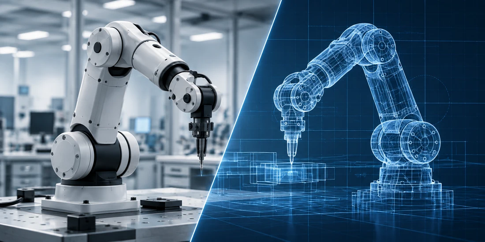

AI & SCIENTIFIC WORKFLOWS
AI agents that advance scientific research.
Domain-aware AI agents and workflow automation connecting data analysis, model development, and scientific tools.
SCIENCE. COMPUTATION. INTELLIGENCE.
AI agents, physics-based simulation, and scientific software—built around real research and engineering problems.
Conceptual visualization
OUR EXPERTISE
We combine domain expertise, advanced computation, and AI to help research and engineering teams turn complex problems into practical solutions.
AI & SCIENTIFIC WORKFLOWS
Domain-aware AI agents and workflow automation connecting data analysis, model development, and scientific tools.

SIMULATION & DIGITAL TWINS
From computational fluid dynamics to atmospheric and aerosol modeling, we develop simulation and digital-twin workflows.
CORE CAPABILITIES
AI-native workflow design meets physics-based modeling, from a focused scientific question to an integrated computational platform.
Discuss your technical problemDomain-specific AI agents that connect large language models with scientific tools, simulation codes, datasets, code execution, literature workflows, and technical reporting.
World-model-driven simulation environments, digital twins, scene reconstruction, and data-generation workflows for robotics, embodied intelligence, perception, planning, and evaluation.
Computational fluid dynamics, airflow and transport modeling, ventilation analysis, multiphysics workflows, and customized numerical pipelines for engineering and environmental systems.
Advanced atmospheric and aerosol modeling, including mixing-state-resolved particle simulation, heterogeneous chemistry, WRF/CMAQ/CESM workflows, remote sensing, GIS, and environmental intelligence.
WHAT WE BUILD
Projects can range from targeted analysis to complete computational platforms, depending on your scope, data, model requirements, and deployment needs.
KNOWLEDGE → EXECUTION
Connect literature, data, computation, visualization, and reporting in a scientific workflow designed for your team.
AI agents & workflowsPHYSICS → INSIGHT
Develop repeatable CFD pipelines, robotics simulation environments, and custom physics-based computational tools.
Physics & simulationENVIRONMENT → UNDERSTANDING
Work with air quality, climate, exposure, aerosol microphysics, remote sensing, and geospatial data for decision support.
Atmospheric modelingWHY ATMONEX
We connect scientific expertise with AI, code, data, and simulation. Each engagement is defined around the technical objective, available inputs, assumptions, required outputs, budget, and schedule.
Clarify the scientific or engineering question, data, model assumptions, deliverables, and acceptance criteria.
Perform modeling, data processing, software development, validation, AI workflow integration, or technical analysis.
Deliver agreed outputs such as code, reports, figures, datasets, dashboards, simulation results, or deployable tools.
CONTACT ATMONEX
For project inquiries, collaborations, invoices, service questions, cancellations, or billing support, contact us by email.
AtmoNex LLC is a U.S. limited liability company providing remote scientific, technical, AI, software, simulation, environmental, and related consulting services.
AtmoNex LLC provides scientific computing and technical consulting services, including vertical AI and research agents, robotics and world-model simulation platforms, computational fluid dynamics, atmospheric and aerosol modeling, environmental data analysis, remote sensing, GIS, and custom scientific software. Services are generally delivered remotely and billed on a project, service, or milestone basis.
These general terms apply unless a written proposal, statement of work, contract, or invoice states different terms.
Scope, deliverables, pricing, schedule, and payment terms are agreed with each client in writing. AtmoNex LLC provides professional technical and consulting services; no physical goods are sold through this website.
Invoices are payable according to the due date and currency shown on the invoice. Payment may be processed by a third-party payment provider.
Clients may request cancellation by contacting AtmoNex LLC. Fees for work already performed, time already incurred, and custom deliverables already provided are generally non-refundable unless otherwise required by law or agreed in writing.
For prepaid amounts relating to work not yet performed, any refund will follow the applicable written agreement. Billing concerns should be sent to the contact email below.